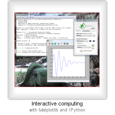
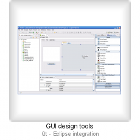
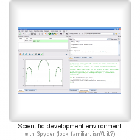

Python(x,y) is a free scientific and engineering development software for numerical computations, data analysis and data visualization based on Python programming language, Qt graphical user interfaces and Spyder interactive scientific development environment.
With Python(x,y), one can do:
And A lot more...
  
Python(x,y) is a scientific-oriented Python Distribution based on Qt and Spyder - see the Plugins page. Its purpose is to help scientific programmers used to interpreted languages (such as MATLAB or IDL) or compiled languages (C/C++ or Fortran) to switch to Python. C/C++ or Fortran programmers should appreciate to reuse their code "as is" by wrapping it so it can be called directly from Python scripts.
(MATLAB® is a registered trademark of The MathWorks. IDL® is a registered trademark of ITT Visual Information Solutions.)
Python(x,y) has five main features:
In many ways, Python is far more superior to other scientific languages: it's a general-purpose language (e.g. with powerful GUI, I/O, internet, and database libraries), it's free and open-source, fundamentally object-oriented, very portable, extensible and embeddable, and so on. However, Python libraries generally suffer from a lack of documentation, even if the growing community contributes everyday with detailed tutorials on many topics.
Because testing all libraries, choosing the right one for the right usage, and grabbing all the free documentation on the internet takes time. Moreover, one needs some perspective to elaborate its own coherent development framework (i.e. Python libraries and development environment).
Python(x,y) was created for :
We strongly recommend using PyQt for Graphical User Interface (GUI) development, since it is a very powerful and easy-to-use library – Mark Summerfield’s book is the best way to get started with PyQt (it is also a very good, very effective introduction to the Python language). For scientific programs, note that matplotlib figures (mainly 2D graphics) can be embedded in PyQt applications window, almost as easily as in MATLAB.
Python(x, y) Was concieved, developed and maintained by Raybaut Raybaut circa 2008 with the above goals. Gabi Davar joined the project as a maintainer circa 2011. Pierre moved to work on other project circa 2013 leaving Gabi as the primary maintainer.
Pierre Raybaut
March 2008
Gabi Davar
November 2015